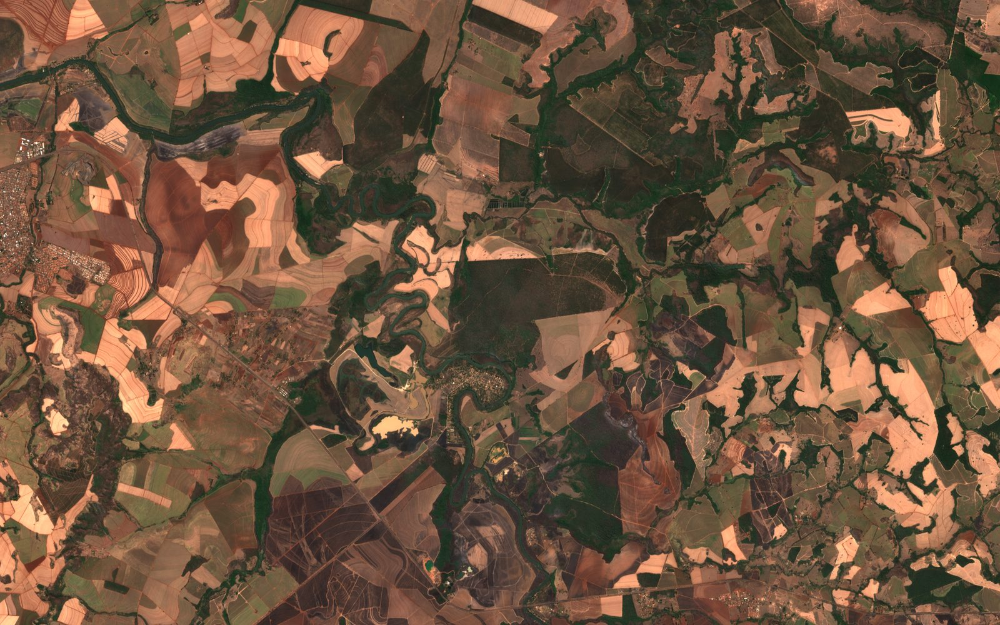

Warnings that reach both sides
Every close approach goes to both operators at the same moment, in the standard format their teams already read.
LoqSat is a neutral layer that routes collision warnings between satellite operators, carries the maneuver they agree on, and keeps a record nobody can quietly change.
Run plays a sample close approach between two simulated satellites, from warning to agreement.
This view needs WebGL.
Drag to turn. Click a dot to name it.
Defense innovation marketplace
LoqSat was assessed as Awardable on the CDAO Tradewinds Solutions Marketplace.
CDAO Tradewinds Solutions MarketplaceAuthorized buyers can find LoqSat on the marketplace, watch the solution video and ask for a demonstration.
Milestone-based prototype agreements, each milestone ending in something your team can run.
The full coordination flow runs end to end in our demo, from the first warning to the signed-off record.
Assessment as Awardable does not constitute a government contract, funding commitment, endorsement, sole-source authorization, or guarantee of an award.
Operators maneuver thousands of satellites with no neutral infrastructure and no verified record of what they agreed. The problem is not awareness. The problem is coordination.
Press Run and watch it on the globe. Every step lands on a record that nobody can quietly change.
An operator asks for its spacecraft to be screened against the catalogue.
A tracking provider flags a close approach between two spacecraft.
Both operators get the same advisory at the same time. LoqSat never computes risk itself.
Operators negotiate the maneuver through the layer, not by phone and email.
The agreement is written to a tamper-evident record that regulators and insurers can audit.
Coordination record
| # | Time | Who | Event | Seal |
|---|
Press Run to record a sample event between two simulated operators.
From the first warning to the closest approach, both operators work from the same page and the same clock.
Less time on the phone, a clear answer on who moves, and proof of what was agreed.
Every close approach goes to both operators at the same moment, in the standard format their teams already read.
Offer, counter and accept a maneuver in one place, in minutes instead of a chain of calls and emails.
A record nobody can quietly change, which you, a regulator or an insurer can check at any time.
Work from public tracking or your commercial provider, and change providers without changing how you work.
Space weather and other conditions that affect a close approach arrive with the warning itself.
Coordination history in a form licensing offices, auditors and underwriters can use.
Two satellites are on course to pass 200 m apart. The safe line is 1 km. Pick when your satellite fires and how hard, then press Play.
Illustrative orbital mechanics for a sample event: a small push along the orbit moves where the satellite arrives by about 3 × push × time to closest approach. Not a screening or a maneuver recommendation.
Nothing moves without permission from the right party. If no answer comes, nothing is sent.
Advice stays advice. The operator who owns the spacecraft makes the call.
Five groups, one layer. Each one gets what it needs from the same record.
Coordination for every spacecraft you fly, from a single satellite to a full constellation.
Available through established government procurement vehicles.
Plug in as a verified conjunction assessment provider. No operator disruption on substitution.
Auditable coordination logs for compliance and liability as space traffic rules mature.
LoqSat Earth Signals: weekly measurements of the Brazil sugar cane harvest from orbit.
LoqSat was assessed as Awardable by the Department of Defense’s Chief Digital and Artificial Intelligence Office (CDAO) on the Tradewinds Solutions Marketplace. Authorized government buyers can watch the solution video, request a demonstration and open acquisition talks.
Assessment as Awardable does not constitute a government contract, funding commitment, endorsement, sole-source authorization, or guarantee of an award.
The same orbit, pointed at the ground. We measure the Brazil sugar cane harvest from orbit every week, as it happens.

First signal
The share of standing cane cut so far, measured from orbit and delivered every week.
CSV or Parquet each week, delivered to your bucket or SFTP.
A short PDF with the numbers, the images and what changed.
How every number is made, so your team can check it.
A history sample and a 30 to 90 day live trial.
Spacecraft operator, government program office, data supplier, trading desk or investor: tell us who you are and what you are working on.